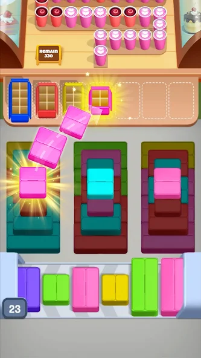
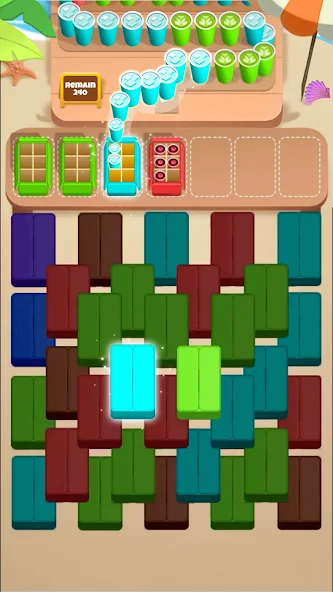
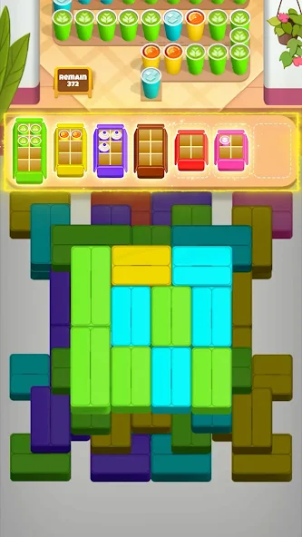
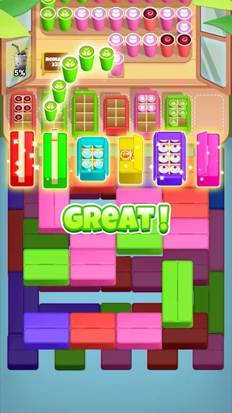
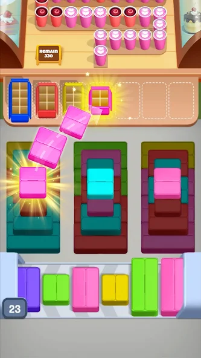
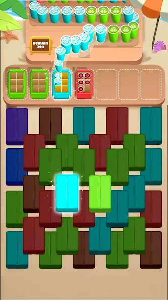
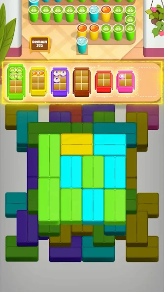
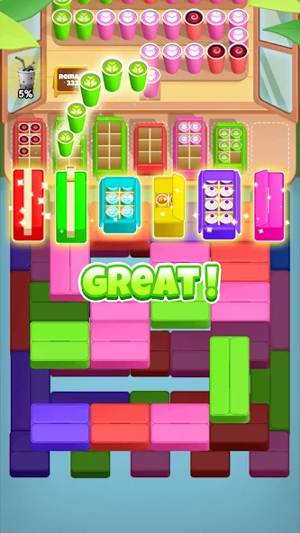

Coffee Frenzy
Serve perfect cups of coffee under pressure in this fast-paced game
Serve perfect cups of coffee under pressure in this fast-paced game
Coffee Frenzy is a vibrant and engaging mobile game where you sort coffee orders to colored boxes. it’s all about fast reflexes and satisfying visuals. worked on gameplay systems, sorting mechanics, particle polish, and creatives.
 







You can find the game on